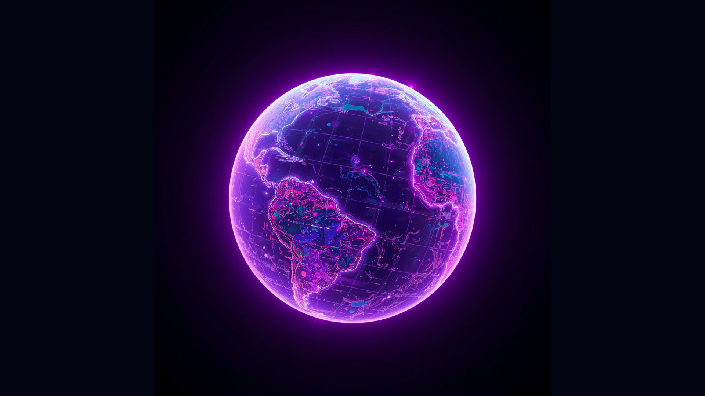
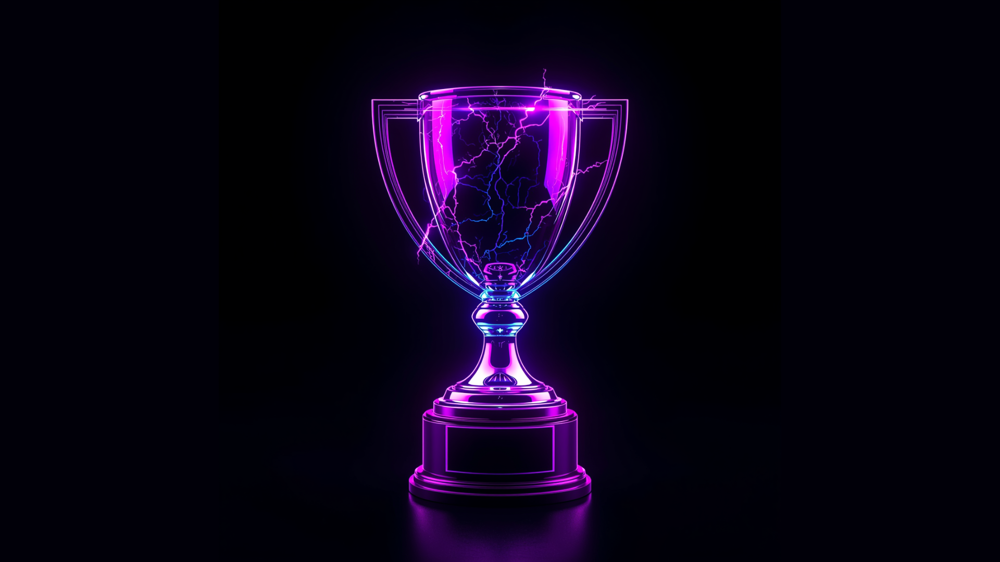
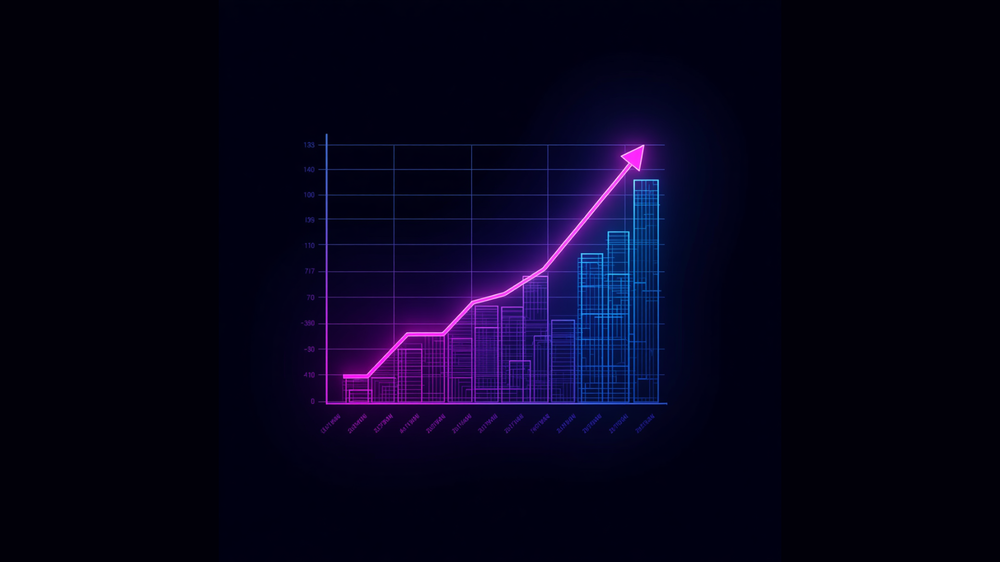
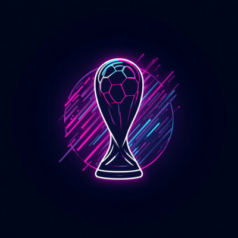
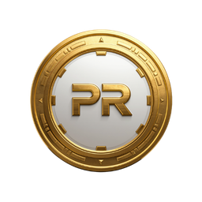
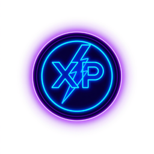
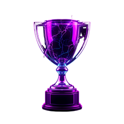

Global Challenge
Gioca contro utenti da tutto il mondo.
→Sfide globali, premi esclusivi e un’esperienza fantasy mai vista prima. Vivi il Mondiale con il ritmo ProFantasy, tra competizione, ranking live e contenuti dedicati.

Gioca contro utenti da tutto il mondo.
→
Montepremi, bonus e riconoscimenti speciali.
→
Classifiche e aggiornamenti sempre attivi.
→
Accedi, controlla i tuoi dati e continua la scalata nella classifica globale.



Ogni modalità ti permette di guadagnare token, completare missioni e scalare la classifica durante tutto il Mondiale.
Ricevi 1000 token iniziali, invita amici, completa missioni e usa i token per partecipare alle previsioni.
Ogni giorno scegli l’esito 1/X/2 della partita selezionata. Se indovini, guadagni token e migliori la tua posizione.
Compila il tuo tabellone prima dell’inizio del torneo: gironi, qualificazioni, finaliste e vincitore del Mondiale.
Completa obiettivi giornalieri e settimanali per ottenere token extra, XP e bonus speciali.
La World Cup Arena non è una semplice classifica: è una modalità evento. Ogni accesso, previsione e missione ti avvicina alla vetta globale.
Crea il tuo profilo evento e attiva il wallet ProFantasy per iniziare la competizione mondiale.
Ogni nuovo player parte con un saldo iniziale da usare nelle prediction e nelle modalità evento.
Ogni giorno scegli l’esito 1/X/2 delle partite selezionate. Se indovini, aumenti il tuo saldo e migliori il ranking.
Accedi ogni giorno, invita amici, completa obiettivi e sblocca bonus extra durante tutto il torneo.
Prevedi il percorso delle nazionali: gironi, qualificazioni, finaliste e vincitore finale.
Ogni token guadagnato, missione completata e prediction corretta contribuisce alla tua corsa nella leaderboard globale.
La World Cup Arena sarà la modalità evento ufficiale di ProFantasy: token, missioni, bracket prediction e classifica live in un’unica esperienza.